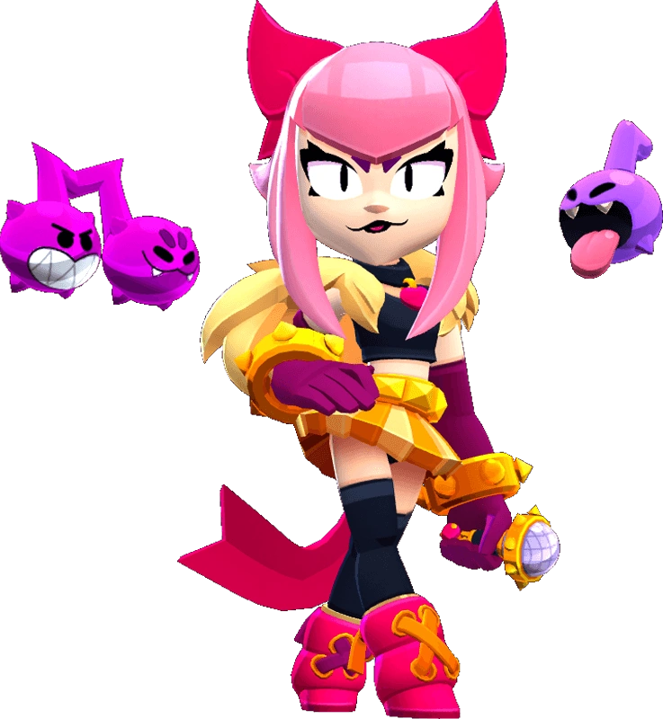

¿Quién es Hank?
Cuando se trata del karaoke, Melodie no tiene piedad. Gracias a su apariencia de estrella del pop y a unas cuerdas vocales monstruosas, esta brawler nunca pasa desapercibida.
Melodie es una Brawler Mítica, que tiene un largo alcance, una salud moderadamente alta y un alto potencial de daño. Su ataque es una nota musical de largo alcance que causa muy poco daño. Cuando golpea a un objetivo, las notas musicales giran a su alrededor y cada una causa un daño moderadamente alto. Para su Super, lanza algunas fichas hacia adelante y se puede usar tres veces.
|  |
NIVEL DE FUERZA 11 |
Sus gadgets
ENTONACIÓN PERFECTA: Las notas de Melodie giran un 25% más rápido y en una órbita un 60% más amplia durante 5 segundos. |
INTERLUDIO: Melodie obtiene un escudo equivalente al 10% de sus puntos de vida por cada nota que tenga. |
Sus habilidades estelares
 |
CRESCENDO: La velocidad de movimiento de Melodie aumenta un 6% por cada nota. |
 |
BIS: Las notas musicales de Melodie duran un 25% más antes de desaparecer. |
 Braian Arancibia
Braian Arancibia Aya El Baarar
Aya El Baarar